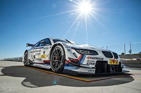

All about cars!
Published on Nov 7, 2024 by Yousif OmranIn 2009, the M3 took part in the Le Mans Series, and it was designed to be super fast. Modified by BMW Motorsport, the 4.0-liter V8 engine cranks out an impressive 485 horsepower and 368 lb-ft of torque. In comparison, the regular M3 only has 414 horsepower and 295 lb-ft of torque. The specifications are quite remarkable as well. It features 380mm brake discs in the front and 322mm in the back. The M3 has shed 505 kg, bringing its weight down to just 1150 kg. That’s pretty impressive, especially with a massive 110-liter fuel tank for endurance racing, and most of the body is made from carbon-fiber-reinforced plastic.
This BMW also crashed in the Le Mans it was a sad thing to watch but it was rebuilt i am glad they rebuilt it because it is an amazing car and a great machine! I got this picture from google images.
 ©2024 Yousif Omran. All rights reserved